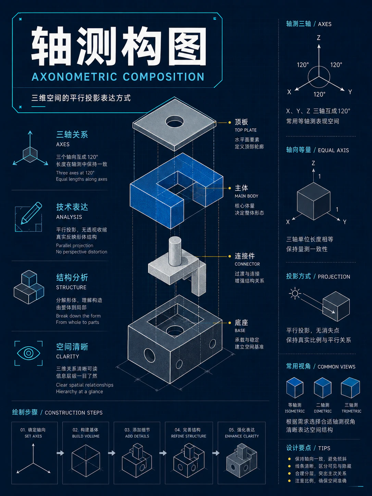

一族三派：等轴、二轴、三轴
THREE FAMILIES OF ORTHOGRAPHIC AXONOMETRY
很多设计师把「轴测」和「等轴测（等距）」混为一谈，其实正轴测是一个完整的家族。只要观察者沿空间任意斜向平行投射，三个坐标轴的缩短系数 p、q、r 就必然严格满足欧几里得正交投影恒等式 p² + q² + r² = 2。点拖下面罗盘里的视向点，看看三个面的面积权重怎样此消彼长。
海报说多了一点
CORRECTION · NOT EVERY AXONOMETRIC IS 120°
「三个轴向互成 120°，长度在轴测中保持一致」 · 「三轴单位长度相等，保持量测一致性」
实际情况是：互成 120° 且三轴等长，只是轴测家族里最常用的一支——等轴测（Isometric，详见 075 等距构图）。原海报右下方其实也列出了「二轴测」和「三轴测」，它们恰恰是靠打破三轴等长换来更大的主展示面，或者错开前后棱的重影。按照 ISO 5456-3:1996 国际工程制图标准，只要三轴各自沿本轴保持均匀比例，就都具备精准量测性。
五步画法与隐线层
CONSTRUCTION STEPS & LINE HIERARCHY
原海报把轴测构图的实战要点浓缩成四条设计准则：「保持轴向一致，避免倾斜」「线条清晰，区分可见与隐藏」「合理分层，突出主次关系」「注重比例，确保空间准确」，并在底沿给出了从 01 到 05 的标准建造序列。点按下方步骤与线型开关，看看同一块零件如何通过三级线宽和隐藏虚线把内外空间彻底交代清楚。
全图无论拆开多少层，所有长、宽、高边都只能沿唯一一套三轴方向延伸。
外轮廓最粗、内部交线次之、背面被遮挡的内腔与装配导轨统一改用细虚线。
像原海报用工业蓝点亮核心 U 形主体那样，只给最核心功能件上强色，辅助件退回中性灰银。
平行投影的家族边界
AXONOMETRIC VS PERSPECTIVE & OBLIQUE
同在「空间层次与投影」这一小类里，轴测和透视的分水岭在于投射线是否平行；轴测和斜投影的分水岭在于投射线是否垂直于画纸。左右拉动下方对比帘，直尺核验同一排三根等高立柱在不同投影下的高度差。
轴测里三轴严格 120° 等比的特例，最适合模块化积木与像素世界。
074 斜投影构图同样平行不缩，但让正面完全平行画纸、仅把进深沿斜线拉出。
073 平行透视构图立面保持横平竖直、纵深线朝单一灭点收拢，偏重空间秩序与走廊纵深。
069–072 线性 / 一二三点透视用近大远小和消失点还原人眼实景，分别另有 070 一点、071 两点、072 三点专页。
065–068 景深与遮挡层次靠前中后景、框架、重叠与尺度递减营造景深，而非靠机械平行投影。
其余同小类直达：066 前景框架 · 067 重叠空间 · 068 尺度递减 · 070 一点透视 · 071 两点透视 · 072 三点透视。
从机械讲台到现代建筑
ORIGIN & HISTORICAL LINEAGE
轴测构图并非电脑 CAD 时代才发明的新花样。从文艺复兴手稿里的拆解机械，到 19 世纪剑桥大学讲台与柏林数学证明，再到现代建筑的宣言与国际标准，它走过了一条清晰的工程与美学合流之路。点选下面五个历史节点切换对应画法图版。
1820 / 1822 · William Farish 正式确立等距法
剑桥大学教授 William Farish 为课堂上反复拆装的模块化机器设计了统一绘图规范，1820 年宣读、1822 年刊于《剑桥哲学学会会刊》卷一的《On Isometrical Perspective》首次给出了系统的三轴 120° 等距几何法，直接催生了现代机械制图。
何时用，什么时候别用
WHEN TO USE · WHEN TO AVOID
去掉透视近大远小是一把双刃剑：你换来了精准的尺度与通透的结构分解，也同时放弃了人眼最熟悉的空间距离线索。切换下面三种观察状态，亲眼看看轴测容易踩进哪两个视觉陷阱。
最适合用轴测构图的场景
- 工业装配与爆炸说明书：像 076 原海报一样把壳体、销轴、腔体沿轴拆开，零件关系无需大段文字就能读懂。
- 建筑与室内空间剖析：切开屋顶或外墙，一张图同步交代平面动线、层高关系与结构承重。
- 复杂系统架构与信息图：把多层软硬件堆栈、供应链节点摊成清晰的三维阶梯，每层地位平等不畸变。
- 产品多维展示与包装结构：既要像照片一样立体，又要让客户直接看清长宽高比例。
什么时候别用轴测构图
- 需要临场压迫感与宏大纵深：电影海报、城市街道仰拍、纪念碑建筑需要近大远小制造视觉张力，轴测会让宏伟建筑像微缩模型。
- 写实人像与情绪叙事：人眼在近距离看脸依赖自然镜头透视；强套轴测会让面部与肢体显得僵硬冰冷。
- 纵深极大且前后密集遮挡的景物：若物体沿视线排成深长队列，没有尺度递减会让前景和背景糊成一片。
- 只想突出单一正面平面图形：若正面是表盘、海报墙或文字标志，直接用正视图或 074 斜投影 更稳妥。
动手判一判
DIAGNOSTIC CHECK · SINGLE-VARIABLE COMPARISON
你要为一页精密仪表说明书画一张轴测装配图，让工程师一眼看懂四个零件的上下插接顺序与内部销轴位置。下面四张蓝图用了完全相同的视向角和零件，只改了一个构图变量——点击你认为最清楚的那一张。
原海报与关键词
ORIGINAL POSTER & KEYWORDS
